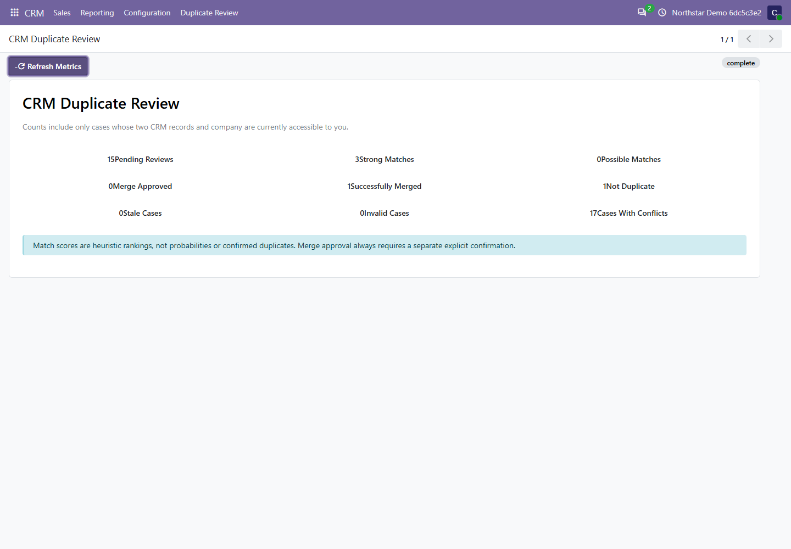
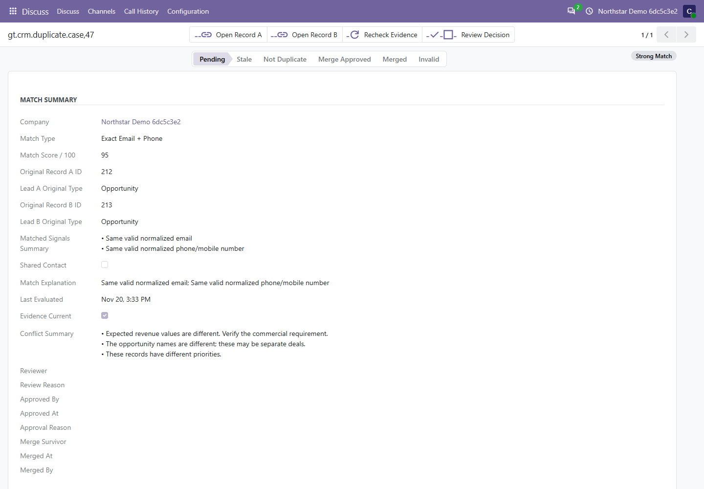
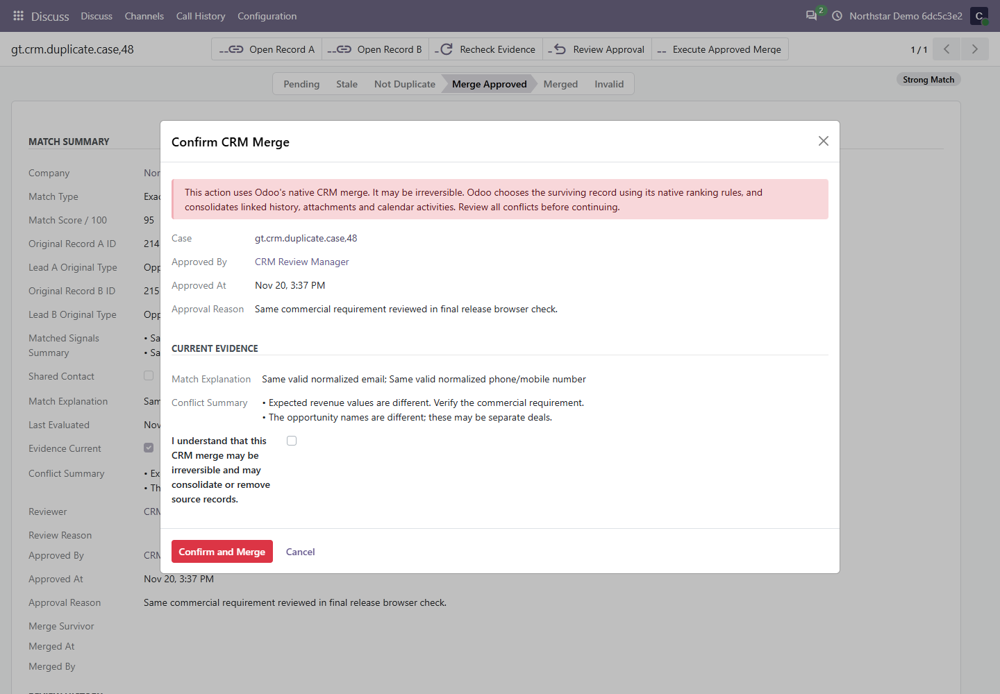
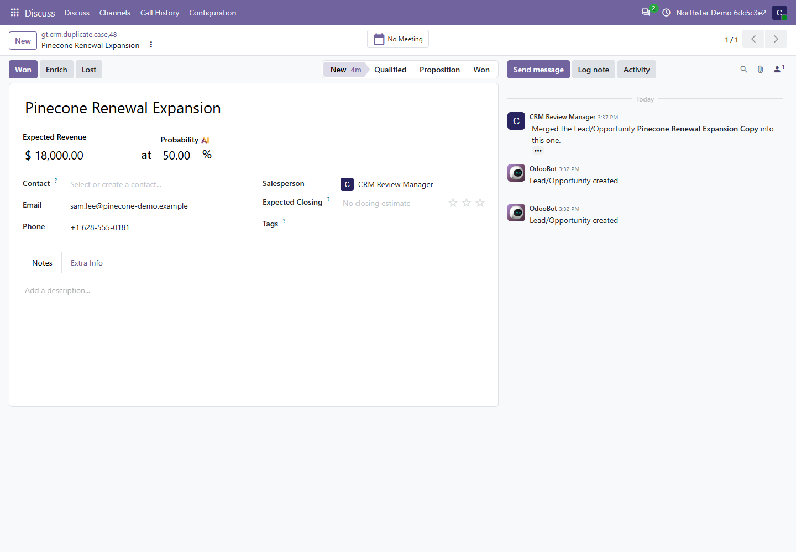

Find Similar Leads. Review Conflicts. Merge With Confidence.
Explainable duplicate suggestions and a controlled review-to-merge workflow for sales teams. Your team makes the decision; similarity scores never merge records on their own.
Exact email and phone signalsHuman review before mergingHistorical decision evidence
Reduce duplicate noise without hiding real sales work
Repeated records create extra outreach, unclear ownership and confusing pipeline reports. Matching contact details alone do not prove two opportunities are the same deal, so Duplicate Review puts the evidence and business context in front of a reviewer.
01
Find matching records
Normalize email, phone and mobile values and surface exact or conservative near-email candidates.
02
Review before acting
See match signals, heuristic score, customer context and conflicts in a central review queue.
03
Keep legitimate deals distinct
Record a reason when shared contacts represent different commercial requirements.
Explainable matching, not a black box
Each suggestion shows the signals that produced it. The score is a deterministic heuristic ranking from 0 to 100, not a probability that the records are duplicates.
Exact normalized email
Exact valid phone/mobile comparison, including cross-field matches
Conservative near-email suggestions with generic mailbox cautions
Context warnings for different owners, stages, customers, opportunity names, revenue and priorities
Shared contact details remain a warning; they do not trigger an automatic merge
Review the business requirement. Two opportunities can share the same customer and telephone number while covering different products, renewals or projects. A high score is a prompt to investigate—not a confirmed duplicate.
A focused review workspace
The CRM queue keeps candidate evidence, source links and review history together. Access is checked against both source CRM records and company permissions.

Actual Odoo Community dashboard with synthetic verification records.Review queue with case status, match classification and CRM context.
Compare the CRM records side by side
Inspect lead type, customer/contact, email, phone, mobile, salesperson, team, stage, expected revenue, probability, priority and record activity before deciding.

Actual case evidence and conflict warnings. Source record links honor CRM access rules.
Expected revenue differences and separate opportunity names are informational conflicts. The addon does not add revenues, reconcile sales documents or choose business fields through a custom mapping screen.
Review → Approve → Confirm → Native CRM Merge
Every merge is a separate, deliberate manager action through Odoo's native CRM merge behavior.
STEP 1Detect
STEP 2Review evidence
STEP 3Approve
STEP 4Confirm irreversible action
STEP 5Verify native result
Review decision and case history.

Separate confirmation before native merge execution.

Verified native CRM merge result.
Security, audit and company boundaries
Least-privilege roles
Review Users read permitted cases; Managers receive review and merge actions. Neither role expands access to CRM leads.
Company-scoped matching
Pairs are limited to one eligible company. Company-less leads are excluded from automatic pairing.
Decision history
Application events record actor, timestamps, reasons and merge outcome. This is application-level protection, not protection from database administrators.
Getting started
Install CRM and CRM Duplicate Review.
Assign Duplicate Review User or Duplicate Review Manager to the appropriate CRM users.
Open CRM → Duplicate Review → Dashboard or Review Queue.
Managers can run a company-scoped scan and review its candidate evidence.
Approve only when the two records represent the same CRM requirement; confirm separately to run the native merge.
Irreversible operation: native CRM merging can consolidate and remove a source record. Verify the opportunity context and expected native field behavior before final confirmation. Consult the included user guide for scheduled scans, permissions and troubleshooting.
What does a score of 95 mean?
It is a heuristic score for the strongest configured match signal. It is not a 95% probability or an instruction to merge.
Does it merge automatically?
No. A manager must review, approve and separately confirm a native CRM merge.
Does it merge contacts or sales documents?
No. The scope is CRM leads and opportunities only. Contact deduplication and accounting/sales document reconciliation are excluded.